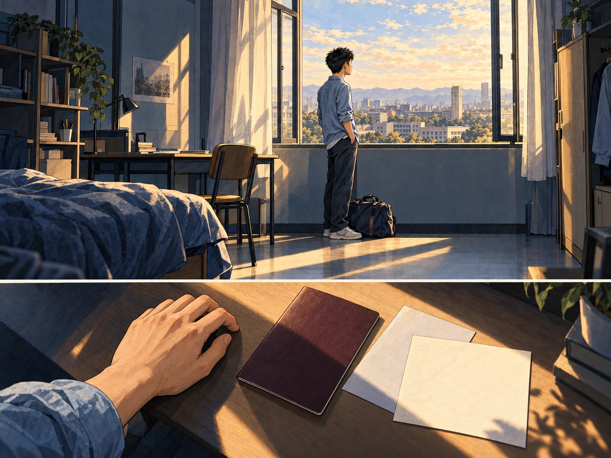
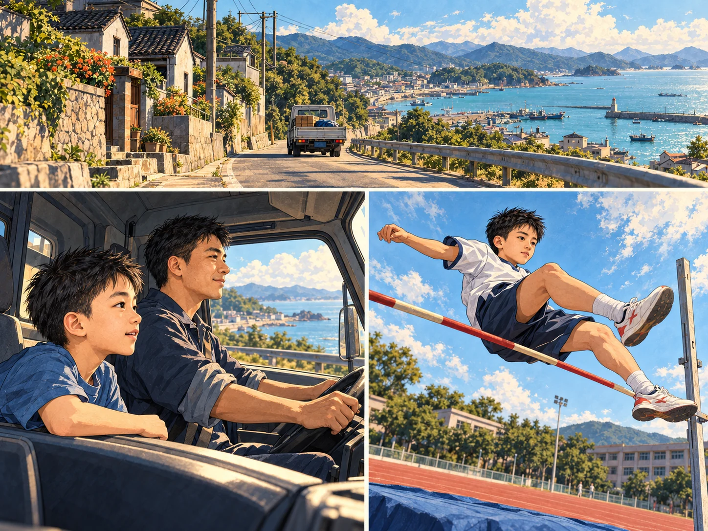
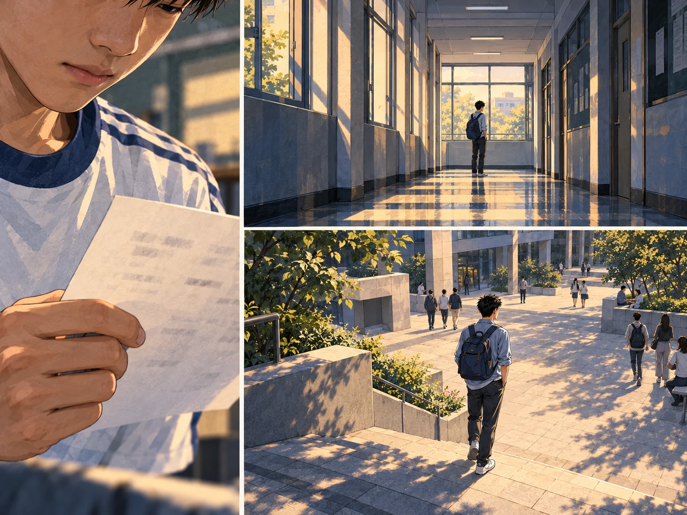
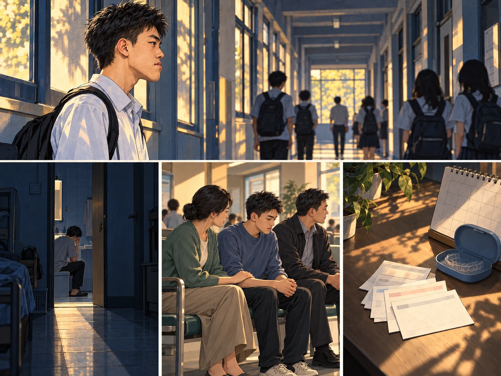
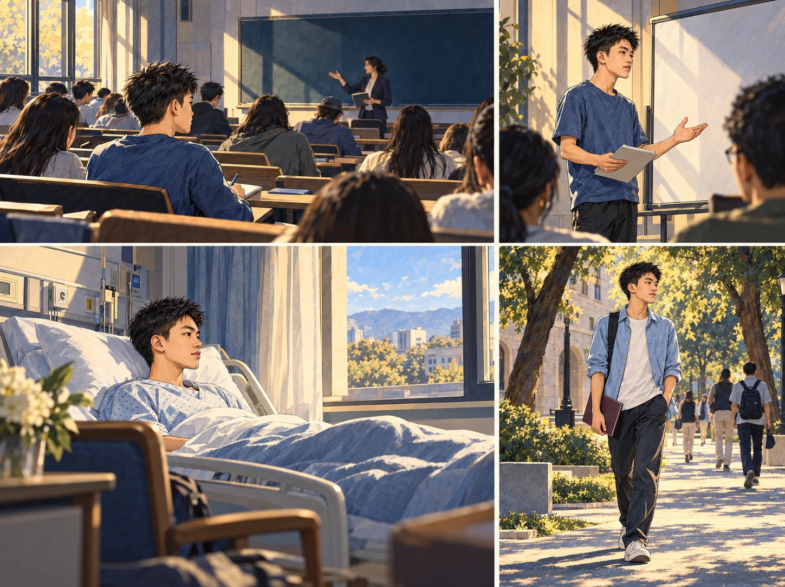
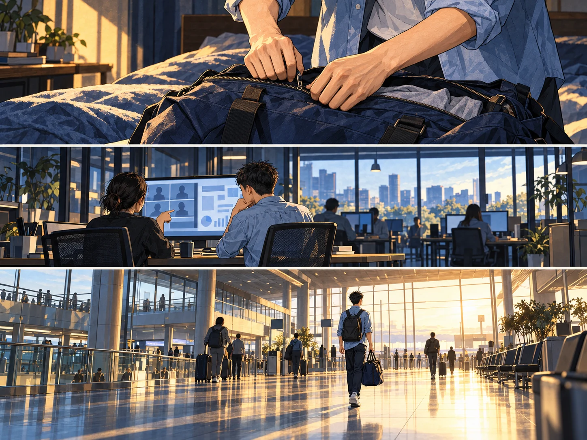

The Cost of Going

A year at Paris 1 would mean graduating a year later. I thought about that choice for a long time.
The World Beside Dad

I grew up in a coastal village in Xianxiang, Ningbo. My earliest journeys were in my father’s delivery truck.
I often stayed in the truck with him. At New Year, visits to relatives and days out with my sister brought city life a little closer.
In fourth grade, I won the district high jump competition. Running and basketball were also part of my school years.
Almost Through

I qualified for a top high school’s special admissions exam, then missed the minimum score. That setback stayed with me.
I returned to preparing, finished first in my class and entered Zhengshi High School. I still felt the distance from what I had hoped for.
My university entrance exam also fell short of my hopes. I chose Zhejiang Gongshang University over a Project 211 university outside Zhejiang.
Someone Beside Me

As my underbite became severe, nicknames and mockery made me afraid of other people’s gaze. Some nights, I hid in the dormitory bathroom and cried.
My family came with me to Shanghai Ninth People’s Hospital. I decided to have corrective jaw surgery.
First came orthodontics. It lasted more than two years—much longer than I had expected.
A Voice of My Own

At university, I studied French. There was another thread running through those years: teaching English.
I had started teaching after high school. I kept teaching through study, treatment and everything that followed.
In my junior year’s second semester, I finally had surgery. Afterward, I began to regain confidence in everyday life.
I had consistently ranked first in my major. Two months after surgery, I secured postgraduate admission to SWUFE and received the National Scholarship.
This Time, I Chose

Back at that choice, I finally decided to go to Paris.
Before leaving, four months supporting overseas talent sourcing for ByteDance’s Seed team brought me closer to AI.
I left with a new direction taking shape.